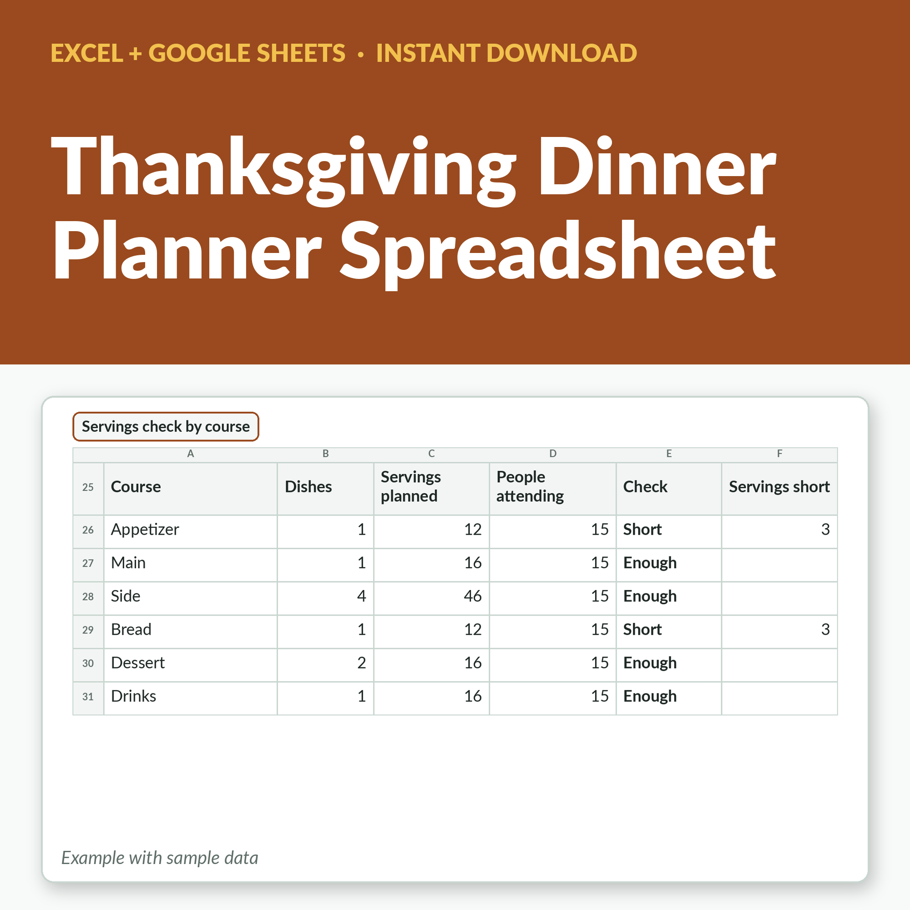

Thanksgiving Dinner Planner Spreadsheet - Guest List, Menu, Shopping List and Turkey Calculator, Excel + Google Sheets
Plan the whole Thanksgiving dinner in one file. Your headcount fills itself in from the guest list, the menu tells you if every course has enough servings, the shopping list keeps you on budget, the countdown tells you what to do each day, and the turkey calculator works out the size, when to start thawing and how long to roast, from USDA guidance.
This download is not available right now while our Etsy shop is closed. Our large-print puzzle books are printed paperbacks sold on Amazon:
Christmas Sudoku, Large Print on Amazon →
Large Print Word Search, 100 Puzzles on Amazon →
What's included
- Guest list for 60 households with adults, kids, RSVP, dietary needs and what they are bringing
- Live headcount: people attending, maybes and households still to reply
- Menu planner for 40 dishes with course, who is making it, servings and oven temperature and time
- Servings check for every course: enough food for your headcount, or how many servings short
- Shopping list for 120 items with estimated cost, what is bought, and your budget left
- Countdown timeline with due dates worked out from your Thanksgiving date, and OVERDUE and Due soon alerts
- Turkey calculator: suggested size, fridge-thawing time and start date, and roasting time from USDA guidance